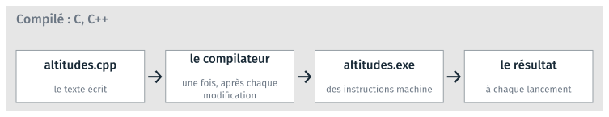
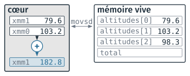
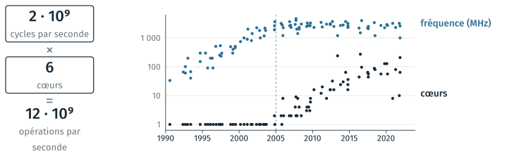
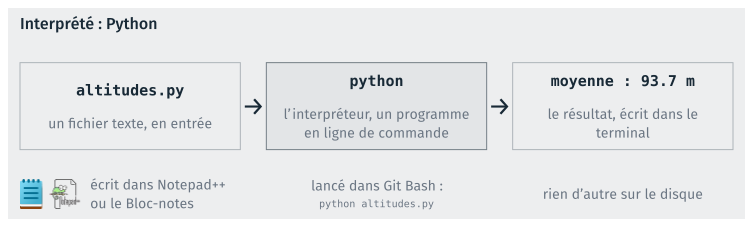
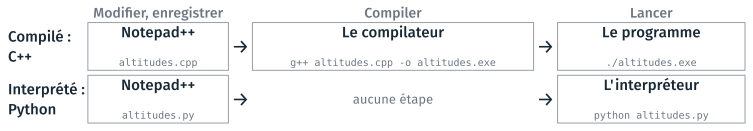
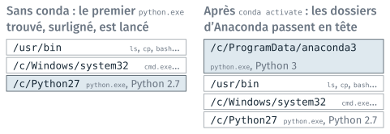

Premier programme#
Les programmes du module sont écrits en Python. Un programme Python est un
fichier texte, que la commande python lit et exécute dans un terminal.
Cette page explique d’abord comment le processeur exécute un programme,
écrit dans un langage compilé ou dans un langage interprété. Pour lancer un
programme Python, il faut savoir quel Python la commande lance, et enregistrer
le fichier après chaque modification.
Dans le TD 1c, on lance un programme Python dans Git Bash, on le modifie et on le relance, puis on refait son calcul dans une session interactive.
Du code au programme : compilation puis exécution#
Le processeur n’exécute que des instructions machine, des opérations élémentaires comme lire une valeur en mémoire, additionner, comparer ou sauter à une autre instruction. Le texte d’un programme doit donc être traduit en instructions machine.
Dans un langage compilé, comme le C ou le C++, un compilateur traduit une fois le texte du programme en instructions machine, et les enregistre dans un fichier exécutable.

Un programme compilé, du texte écrit au résultat.#
Le fichier exécutable se lance seul, sans le compilateur, sur le système pour lequel il a été compilé. Après une modification du texte, il faut recompiler, puis lancer le programme. Une faute de frappe est signalée à la compilation, avant tout lancement. Sur un autre système, il faut recompiler le programme pour ce système.
La page C++ des annexes décrit la compilation et le lancement d’un programme C++.
Instructions machine : une ligne de C++#
Une ligne de code devient plusieurs instructions machine. Le processeur ne calcule que sur ses registres, des cases de mémoire placées dans la puce.
Dans le fichier moyenne.cpp, les deux premières lignes déclarent les
trois altitudes et la variable moyenne. La fonction calculer calcule
ensuite la moyenne :
double altitudes[3] = {79.6, 103.2, 98.3};
double moyenne;
void calculer() {
double total = altitudes[0] + altitudes[1] + altitudes[2];
moyenne = total / 3;
}
La commande g++ -O0 -S -masm=intel moyenne.cpp écrit dans le fichier
moyenne.s les instructions machine produites par le compilateur g++. Ces
instructions y sont écrites en assembleur, une forme texte des
instructions machine. L’option -O0 désactive les optimisations. Pour un processeur x86-64, la première ligne
de la fonction donne six instructions :
movsd xmm1, QWORD PTR altitudes[rip]
movsd xmm0, QWORD PTR altitudes[rip+8]
addsd xmm1, xmm0
movsd xmm0, QWORD PTR altitudes[rip+16]
addsd xmm0, xmm1
movsd QWORD PTR -8[rbp], xmm0
Les instructions de l’entrée et de la sortie de la fonction sont retirées de cet extrait.
Dans les instructions |
Sens |
|---|---|
|
copie |
|
ajoute le registre |
|
deux registres du processeur |
|
|
|
la variable |
Les six instructions sont des copies, movsd, et des additions, addsd.
Le suffixe sd, pour scalar double, désigne un nombre à virgule sur
64 bits. L’opérande de gauche reçoit le résultat.

Le cœur du processeur et la mémoire vive pendant l’instruction addsd xmm1, xmm0.#
Pendant l’instruction addsd xmm1, xmm0, le cœur du processeur
additionne deux registres. Il exécute les instructions une par une, une par
cycle, l’unité de temps du processeur.
La seconde ligne, moyenne = total / 3;, donne quatre instructions. Elles
relisent total, copient la constante 3 dans un registre, divisent
(divsd xmm0, xmm1), puis écrivent le résultat dans moyenne. Une ligne
de Python correspond à des dizaines ou des centaines d’instructions.
Note
Un processeur ARM, celui d’un téléphone ou d’un Mac récent, a d’autres
instructions : ldr, fadd, fdiv, str.
Évolution de la puissance de calcul#
La fréquence d’un processeur est son nombre de cycles par seconde. Elle se mesure en hertz. Une fréquence de 2 GHz correspond à 2 milliards de cycles par seconde, ou 2 000 MHz. Un processeur récent a plusieurs cœurs, et chaque cœur exécute sa propre suite d’instructions.
Un processeur exécute donc plus d’instructions par seconde si sa fréquence monte, ou s’il a plus de cœurs. L’AMD Ryzen 5 7530U (2023) a 6 cœurs, et sa cadence de base est de 2 GHz. Le calcul donne 2 · 10⁹ × 6 = 12 · 10⁹ opérations par seconde.

Le calcul pour l’AMD Ryzen 5 7530U, puis la fréquence et le nombre de cœurs des processeurs de 1990 à 2024, un point par processeur, sur une échelle logarithmique (données de Karl Rupp, microprocessor-trend-data, CC BY 4.0).#
Ce calcul suppose une opération par cycle et par cœur, comme sur le dessin de la section précédente. Les processeurs récents en font davantage par cycle, et la page Le processeur et la carte graphique des annexes en donne le détail. La cadence de base est la fréquence du processeur quand tous ses cœurs calculent à la fois. Un cœur seul monte jusqu’à 4,5 GHz.
Depuis 2005, la fréquence ne monte plus, et le nombre de cœurs augmente. La fréquence plafonne vers 3 GHz, parce que la puissance à évacuer plafonne vers 100 W. Les premiers processeurs grand public à deux cœurs datent de 2005. Les postes de la salle en ont 4, un portable 4 à 8, et un serveur de calcul 32 à 128.
Un programme Python ordinaire n’occupe qu’un cœur, et les autres cœurs servent aux autres programmes ouverts. Un programme occupe plusieurs cœurs s’il découpe son travail en parties indépendantes, comme numpy pour le produit de matrices. Un programme qui n’utilise qu’un cœur gagne donc peu d’une génération de processeurs à la suivante.
Du code au programme : interpréteur#
Dans un langage interprété, comme Python, un interpréteur lit le texte du programme et l’exécute, à chaque lancement, sans fichier exécutable.

Un programme interprété, du fichier texte au résultat.#
Le programme altitudes.py est un fichier texte, qui s’ouvre dans le
Bloc-notes comme au TD 1a. Son extension .py ne change rien à son
contenu. Elle permet seulement à Notepad++ et à l’explorateur de reconnaître
le fichier. Lancer un programme Python ne crée aucun fichier exécutable sur
le disque.
L’interpréteur est lui-même un programme compilé : python.exe est écrit
en C. Pour lancer altitudes.py sur une autre machine, Python doit y être
installé.
Note
Le glossaire de Python qualifie Python de langage interprété, « though the
distinction can be blurry because of the presence of the bytecode
compiler ». python traduit d’abord le texte en bytecode, qu’il exécute
lui-même. Le bytecode n’est pas du code machine.
Compilateur et interpréteur : traduction#
Le compilateur traduit toutes les lignes avant le lancement. L’interpréteur lit chaque ligne, la traduit et l’exécute, puis passe à la suivante.
![En haut, un programme Python de trois lignes : total = 79.6 + 103.2 + 98.3, qui additionne ; moyenne = total / 3, qui divise ; print(moyenne), qui affiche. En bas, deux rangées sur deux colonnes, avant le lancement et pendant l'exécution. Compilateur, le même programme en C++ : avant le lancement, une case grise traduit les lignes 1, 2, 3 et enregistre l'exécutable ; pendant l'exécution, trois cases bleues, additionne, divise, affiche, puis 93.7. Interpréteur, Python : aucune étape avant le lancement ; pendant l'exécution, traduit ligne 1, additionne, traduit ligne 2, divise, traduit ligne 3, affiche, puis 93.7.](../../_images/3_traduction.svg)
Un programme de trois lignes, et le moment où un compilateur et un interpréteur traduisent chaque ligne.#
Les cases grises marquent la traduction, et les cases bleues ce que le processeur exécute. Le schéma ne respecte pas les durées. Une traduction demande bien plus de temps qu’une opération, et la section Compilateur et interpréteur : essais, calculs donne des durées mesurées.
Au lancement suivant, l’exécutable se relance sans traduction, et l’interpréteur traduit de nouveau les trois lignes. Le même programme, écrit en C++, affiche aussi 93.7.
Note
Le schéma simplifie le travail de python. Au lancement, python lit tout
le fichier et le traduit en bytecode, puis il exécute ce bytecode
instruction par instruction. Une parenthèse manquante en dernière ligne est
donc signalée avant l’exécution de la première ligne.
Python, un programme en ligne de commande#
Dans un terminal, la commande python suivie du nom d’un fichier exécute ce
fichier. Tapée seule, elle ouvre une session interactive, où Python
exécute chaque ligne dès qu’on appuie sur Entrée.
Exécuter un fichier : python altitudes.py
$ cd ~/Desktop/info01/cours1/1c_programme/depart
$ python altitudes.py
moyenne : 93.7 m
Ouvrir une session interactive : python
$ python
Python 3.12.14 (main, Sep 2 2026, 23:27:36) [GCC 15.3.0] on linux
>>> 79.6 + 103.2
182.8
>>> exit()
Python écrit ses résultats dans le terminal, sans ouvrir de fenêtre. Comme
ls ou cp, python est une commande, qu’un script peut lancer. exit()
ferme la session interactive. La ligne de version, relevée avec Python 3.12
sous Linux, diffère sur les postes.
Un programme enregistré se relance à l’identique. Une session interactive ne garde rien sur le disque. Un notebook contient du code enregistré dans un fichier, et exécuté morceau par morceau, comme dans une session interactive.
Un programme Python n’ouvre de fenêtre que s’il le demande, par une
bibliothèque graphique. Ceux du module écrivent dans le terminal ou dans des
fichiers. Au cours 5, un programme Python lance ogr2ogr, un autre
programme en ligne de commande.
Dans Git Bash, python lance le Python d’Anaconda après le réglage du
début du TD 1c. Si ce réglage manque sur un poste, l’invite de commandes
d’Anaconda permet de lancer Python. Elle s’ouvre par le menu Démarrer, et
son dossier courant est alors C:\Users\eleve. On y tape
cd Desktop\info01\cours1\1c_programme\travail, puis
python altitudes.py. Cette invite est cmd, avec conda déjà activé, et
python y lance le Python d’Anaconda sans réglage.
Compilateur et interpréteur : essais, calculs#
La commande python altitudes.py lance l’interpréteur, qui lit le fichier
enregistré et l’exécute. Un programme compilé demande une commande de plus.

Modifier un programme, puis le relancer, en C++ et en Python.#
Situation |
Compilé : C++ |
Interprété : Python |
|---|---|---|
Modifier |
compiler, puis lancer : 0,06 s |
lancer : 0,01 s |
Essayer une ligne seule |
compiler tout un programme |
session interactive, |
Calcul de 100 millions d’additions |
0,08 s, traduit une seule fois |
5 s, chaque addition traduite |
En bleu, le côté favorable. L’interprétation convient à un calcul fait une fois et à l’exploration, la compilation à un calcul répété souvent. Les mesures ont été faites sous Linux, avec g++ 11.4 et Python 3.12, sur un processeur AMD Ryzen 7 PRO 6850H.
Sur la première ligne du tableau, l’écart ne se ressent pas, et le
lancement d’un programme Python compte une commande de moins. Le délai de compilation augmente avec la taille du
programme. Sur la dernière ligne, python traduit l’addition à chaque
passage, et le programme compilé ne la traduit plus. Le calcul en Python
prend environ 70 fois le temps du programme C++. Cet écart compare deux
langages, et ne vient pas de la seule interprétation.
Avertissement
L’interpréteur lit le fichier enregistré sur le disque. Une modification faite dans l’éditeur, sans enregistrement, n’est pas exécutée. Le TD 1c le fait constater.
Le programme s’écrit dans Notepad++, un éditeur de texte qui colore le code
d’après l’extension .py. La couleur n’est pas enregistrée dans le
fichier. L’éditeur de code du module, VS Code, se configure au cours 2.
Le module emploie Python, qui se relance sans étape de compilation et s’essaie ligne à ligne. Ses bibliothèques de calcul, comme numpy, font leurs calculs en code compilé, « at near-C speeds » selon la documentation de numpy.
Note
Vitesse d’une boucle de calcul : 72 fois le temps du C sur des calculs intensifs (Pereira et al., SLE 2017) ; 47 fois pour un produit de matrices en Python 2.7 (Leiserson et al., Science, 2020). Les deux mesures sont antérieures à Python 3.11, plus rapide de 25 % en moyenne. Certains langages, comme Java ou JavaScript, combinent la compilation et l’interprétation.
Compilateur et interpréteur : changer de poste#
Un programme Python dépend de l’interpréteur du poste. which python
affiche celui que lance la commande, et le chemin complet de python.exe
en lance un autre.
Situation |
Compilé : C++ |
Interprété : Python |
|---|---|---|
Lancer sur un poste sans Python |
|
installer Python |
Lancer sur un autre système |
recompiler pour ce système |
le même |
En bleu, le côté favorable.
Sur un poste où un Python 2.7 est installé dans C:\Python27, le Python
lancé par défaut dans Git Bash échoue, et celui d’Anaconda réussit :
$ python altitudes.py
SyntaxError: Non-ASCII character '\xc3' in file altitudes.py on line 1…
$ which python
/c/Python27/python
$ /c/ProgramData/anaconda3/python.exe altitudes.py
moyenne : 93.7 m
La première ligne d”altitudes.py contient un caractère accentué. Python 2
ne lit un caractère accentué que si le fichier déclare son encodage, et son
message, coupé ici, continue par « but no encoding declared ». Python 3 lit
l’UTF-8 par défaut. L’encodage des caractères est présenté au cours 3. Dans
Git Bash, C:\ s’écrit /c/, et chaque \ devient /.
Une commande sans /, comme python, est cherchée dans chaque dossier de
la variable PATH, dans l’ordre, et Git Bash lance le premier fichier de
ce nom. Un nom qui contient un / désigne un fichier précis, lancé sans
recherche. La page Le terminal
présente la variable PATH.

La liste des dossiers du PATH, avant et après l’activation de conda.#
conda activate met les dossiers d’Anaconda en tête du PATH. Le réglage
du TD 1c, écrit dans le fichier caché ~/.bash_profile, active conda à
chaque ouverture de Git Bash. which -a python affiche tous les fichiers
trouvés, dans l’ordre. Dans l’invite de commandes, la commande équivalente
à which python est where python.
La page Variables d’environnement et recherche des
programmes des annexes
détaille le PATH.
Un script de commandes#
Un script est un fichier texte qui contient des commandes. bash les
exécute dans l’ordre, comme si on les tapait. Le travail se refait ainsi en
une commande, aussi souvent qu’il le faut.
commandes.sh, dans Notepad++
# Commandes du TD 1b, puis le programme du TD 1c.
# Lancer depuis 1c_programme/travail : bash commandes.sh
mkdir -p copies
cp ../../1b_terminal/depart/*.txt copies/
ls copies
python altitudes.py
Lancé dans Git Bash
$ bash commandes.sh
auld_lang_syne_une_ligne.txt raven_une_ligne.txt
moyenne : 93.4 m
La moyenne est celle du programme modifié à l’étape 4 du TD 1c, avec quatre altitudes.
Une ligne qui commence par
#est un commentaire.mkdir -pne signale pas d’erreur si le dossier existe déjà, au second lancement.Depuis
travail/,../../1b_terminalremonte de deux dossiers, jusqu’àcours1, puis descend dans le dossier du TD 1b.pythony est une commande comme les autres.L’équivalent pour l’invite de commandes est un fichier
.bat, en annexe du guide du TD 1c.
Comme python, bash est un interpréteur. Il lit chaque ligne du script, et
lance la commande qu’elle contient.
Aide-mémoire : programme Python#
![À gauche, l'explorateur de fichiers, ouvert sur …\1c_programme\travail, avec altitudes.py sélectionné et commandes.sh ; dessous, « pour un programme de plusieurs fichiers », et un encadré : un programme écrit dans LibreOffice Writer est enregistré en .odt, et python ne peut pas exécuter ce fichier. Une flèche « ouvrir » mène à droite à l'éditeur de texte, Bloc-notes ou Notepad++, qui affiche les six lignes d'altitudes.py en couleur. Une flèche « enregistrer, puis lancer » descend vers le terminal Git Bash, où python altitudes.py affiche moyenne : 93.7 m.](../../_images/3_aide_memoire.svg)
Les trois fenêtres d’un programme Python : l’explorateur de fichiers, l’éditeur de texte et le terminal.#
Action |
Outil |
Commande ou touche |
|---|---|---|
Enregistrer le programme après chaque modification |
Notepad++ ou le Bloc-notes |
|
Lancer le programme |
Git Bash, dans le dossier du programme |
|
Relancer la commande précédente |
Git Bash |
flèche vers le haut, puis Entrée |
Ouvrir une session interactive, puis la quitter |
Git Bash |
|
Afficher le Python lancé |
Git Bash |
|
Avertissement
Un programme écrit dans LibreOffice Writer est enregistré en .odt, et
python ne peut pas exécuter ce fichier. Un programme s’écrit dans un
éditeur de texte.
TD de la partie#
TD 1c — Lancer un programme, 20 minutes. On y cherche d’abord quel fichier la commande
pythonlance, puis on règle conda dans Git Bash, une fois par poste. On copie ensuite les fichiers dedepartdanstravail, on ouvrealtitudes.pydans Notepad++, on le lance, on le modifie et on le relance. On refait enfin son calcul dans une session interactive. À l’étape 6, facultative, on lance un script de commandes,commandes.sh.
Les TD des autres parties sont dans Travaux dirigés de la séance 1.